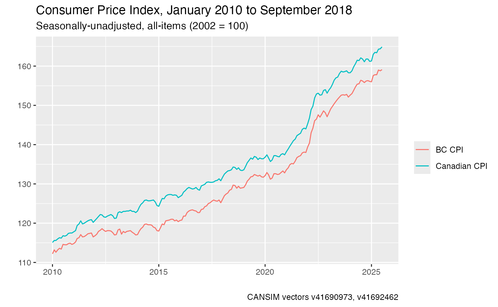

vignettes/retrieving_cansim_vectors.Rmd
retrieving_cansim_vectors.RmdMany of the time-series data available from Statistics Canada have individual vector codes. These vector codes follow a naming format of a lower-case “v” and an identifying numbers. Time-series tables will often bundle many series together, resulting in large and sometimes unwieldy files. Many users of Canadian statistical data, who are often concerned with specific time series such as the CPI or international arrivals, will typically know the exact series they need. For this reason, the cansim package also provides two functions to make it easier to retrieve individual vectors: get_cansim_vector() and get_cansim_vector_for_latest_periods().
Running search_cansim_tables("consumer price index") shows 33 tables as results. However, if you are tracking the Canadian Consumer Price Index (CPI) over time, you might already know the Statistics Canada vector code the seasonally-unadjusted all-items CPI value: v41690973. To retrieve just this data series on its own without all of the additional data available in related tables, we can use the get_cansim_vector() function with the vector code and the date onwards from which we want to get vector results for.
get_cansim_vector("v41690973","2015-01-01")
#> # A tibble: 45 x 9
#> DECIMALS VALUE REF_DATE releaseTime SYMBOL frequencyCode SCALAR_ID
#> <int> <dbl> <chr> <chr> <int> <int> <int>
#> 1 1 124. 2015-01… 2018-06-12… 0 6 0
#> 2 1 125. 2015-02… 2018-06-12… 0 6 0
#> 3 1 126. 2015-03… 2018-06-12… 0 6 0
#> 4 1 126. 2015-04… 2018-06-12… 0 6 0
#> 5 1 127. 2015-05… 2018-06-12… 0 6 0
#> 6 1 127. 2015-06… 2018-06-12… 0 6 0
#> 7 1 127. 2015-07… 2018-06-12… 0 6 0
#> 8 1 127. 2015-08… 2018-06-12… 0 6 0
#> 9 1 127. 2015-09… 2018-06-12… 0 6 0
#> 10 1 127. 2015-10… 2018-06-12… 0 6 0
#> # ... with 35 more rows, and 2 more variables: COORDINATE <chr>,
#> # VECTOR <chr>The call to get_cansim_vector takes three inputs: a string code (or codes) for vectors, a start_time in YYYY-MM-DD format, and an optional value for end_time, also in YYYY-MM-DD format. By default, the start_time and end_time vectors uses Statistics Canada’s reference periods (“REF_DATE”) for selecting the date range of the data for retrieved vectors. There are a few optional input parameters for this function. If end_time is not provided, the call will use the current date as the default series end time. If the optional parameter use_ref_date is set to FALSE, then vector retrieval will instead filter on the release date of the vector itself.
Vectors can be coerced into a list object in order to retrieve multiple series at the same time. For example, provincial seasonally-unadjusted CPI values have their own vector codes. The vector code for British Columbia all-items CPI is v41692462.
The below code retrieves monthly Canadian and BC CPI values for the period January 2015 to December 2017 only. Monthly data series are always dated to the first day of the month.
vectors <- c("v41690973","v41692462")
get_cansim_vector(vectors, "2017-01-01")
#> # A tibble: 42 x 9
#> DECIMALS VALUE REF_DATE releaseTime SYMBOL frequencyCode SCALAR_ID
#> <int> <dbl> <chr> <chr> <int> <int> <int>
#> 1 1 130. 2017-01… 2018-06-12… 0 6 0
#> 2 1 130. 2017-02… 2018-06-12… 0 6 0
#> 3 1 130. 2017-03… 2018-06-12… 0 6 0
#> 4 1 130. 2017-04… 2018-06-12… 0 6 0
#> 5 1 130. 2017-05… 2018-06-12… 0 6 0
#> 6 1 130. 2017-06… 2018-06-12… 0 6 0
#> 7 1 130. 2017-07… 2018-06-12… 0 6 0
#> 8 1 130. 2017-08… 2018-06-12… 0 6 0
#> 9 1 131. 2017-09… 2018-06-12… 0 6 0
#> 10 1 131. 2017-10… 2018-06-12… 0 6 0
#> # ... with 32 more rows, and 2 more variables: COORDINATE <chr>,
#> # VECTOR <chr>Some vectors extend backwards for a significant number of periods that may not be of interest. get_cansim_vectors_for_lates_periods() is a wrapper around get_cansim_vectors that takes a periods input instead of arguments for start_time and end_time, and provides data for the selected vector(s) for the last n periods for which data is available, irrespective of dates.
get_cansim_vector_for_latest_periods("v41690973", periods = 60)
#> # A tibble: 60 x 9
#> DECIMALS VALUE REF_DATE releaseTime SYMBOL frequencyCode SCALAR_ID
#> <int> <dbl> <chr> <chr> <int> <int> <int>
#> 1 1 123 2013-10… 2018-06-12… 0 6 0
#> 2 1 123 2013-11… 2018-06-12… 0 6 0
#> 3 1 123. 2013-12… 2018-06-12… 0 6 0
#> 4 1 123. 2014-01… 2018-06-12… 0 6 0
#> 5 1 124. 2014-02… 2018-06-12… 0 6 0
#> 6 1 125. 2014-03… 2018-06-12… 0 6 0
#> 7 1 125. 2014-04… 2018-06-12… 0 6 0
#> 8 1 126. 2014-05… 2018-06-12… 0 6 0
#> 9 1 126. 2014-06… 2018-06-12… 0 6 0
#> 10 1 126. 2014-07… 2018-06-12… 0 6 0
#> # ... with 50 more rows, and 2 more variables: COORDINATE <chr>,
#> # VECTOR <chr>In these examples, we have used v41690973 for Canada and v41692462 for BC. This can be hard to remember and can get annoying to work with. Both vector retrieval functions in the cansim package allow for named vector extraction. This works by providing a user-determined string directly into a get_* call. This may be useful when working with table code and vector codes that do not have any information in their name and become easy to lose track of.
The convenience function normalize_cansim_values() works for data retrieved by get_cansim_vector() calls the same way it works for full tables retrieved by get_cansim() calls. While using this convenience function is entirely optional, it can save some time by adjusting vector values by their appropriate scalar (percentage) and converting character dates into standard R date objects.
This quick example uses a list with two named vectors and a starting date as an input value, converts values (“normalizes”) on the fly, and prepares a simple ggplot2 graphic.
vectors <- c("Canadian CPI"="v41690973",
"BC CPI"="v41692462")
data <- normalize_cansim_values(get_cansim_vector(vectors, "2010-01-01"))
library(ggplot2)
ggplot(data,aes(x=Date,y=VALUE,color=label)) +
geom_line() +
labs(title="Consumer Price Index, January 2010 to September 2018",
subtitle = "Seasonally-unadjusted, all-items (2002 = 100)",
caption=paste0("CANSIM vectors ",paste0(vectors,collapse = ", ")),x="",y="",color="")
To access metadata for vectors we can use the get_cansim_vector_info call
get_cansim_vector_info(vectors)
#> # A tibble: 2 x 10
#> DECIMALS VECTOR table COORDINATE title_en title_fr UOM frequencyCode
#> <int> <chr> <chr> <chr> <chr> <chr> <int> <int>
#> 1 1 v4169… 18-1… 2.2.0.0.0… Canada;… Canada;… 17 6
#> 2 1 v4169… 18-1… 26.2.0.0.… British… Colombi… 17 6
#> # ... with 2 more variables: SCALAR_ID <int>, title <chr>